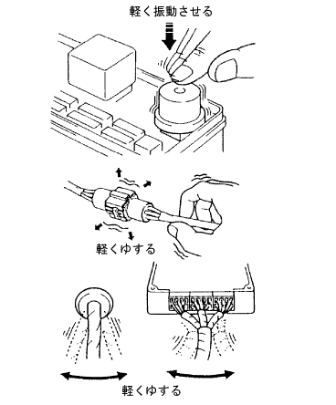
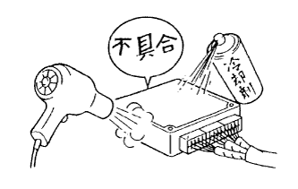
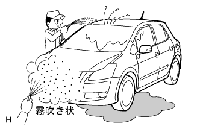

How to Troubleshoot ECU Controlled Systems Symptom Simulation |
 |
Parts and Sensors
Apply slight vibration, such as tapping lightly by hand, to the parts likely to be the cause, and check whether the malfunction occurs.
Connector
Gently shake the connector vertically and horizontally.
Wire Harness
Gently shake the wire harness vertically and horizontally, and check whether the malfunction occurs.
 |
Using a hair dryer or coolant spray, heat or cool the parts likely to be the cause of the malfunction, and check whether the malfunction occurs.
 |
Sprinkle water onto the vehicle and check whether the malfunction occurs.
Turn on electrical parts such as the heater blower, headlights and rear defogger to increase the electrical load, and check whether the malfunction occurs.